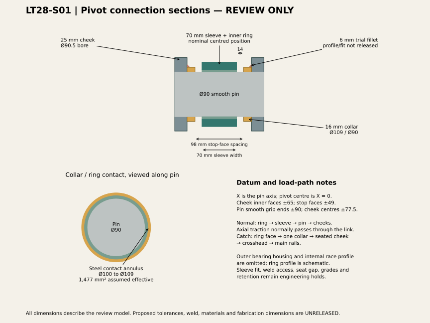
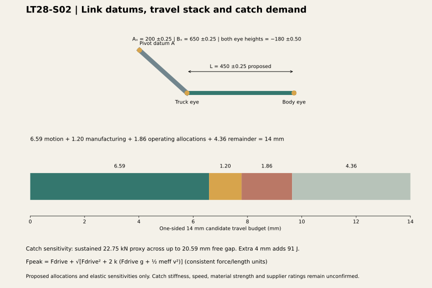

CURRENT COORDINATED REVIEW · LT28
One assembly. One updated movement basis.
The pivot candidate, cooling ducts, cut access panels, pump supports and connection routes now share the same assembly and recalculated mass-based positions on the 50 m target curve.
16,072 kgReconciled base allowance mass; actual weights remain unconfirmed
504 posesStraight, left and right · six mass envelopes · suspension and demand cases
4.36 mmConditional pivot remainder against wider archived motion and proposed 3.06 mm stack
Fabrication dimensions remain unreleased. The prior 3.41 mm margin remains an archived provisional estimate. The new dimension-based result is conditional on proposed tolerances, wear, temperature and elastic allowances. Catch strength and brake/bumper ratings are unresolved.
Pivot connection sections

